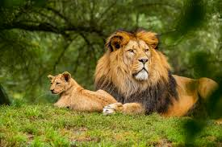

What is Wildlife Photography?
Wildlife photography is a captivating genre that centers on capturing animals in their natural environments.
It seeks to document their behaviors, the stunning beauty of nature, and the connections between animals and their surroundings.
This art form often demands a lot of patience, skill, and a heartfelt respect for the wild..
